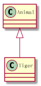
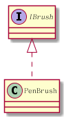
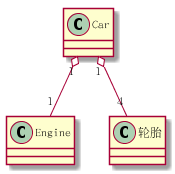
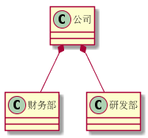
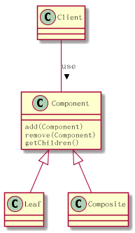
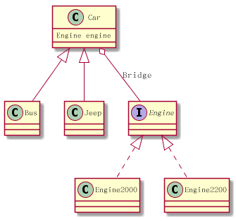
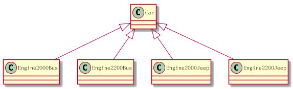
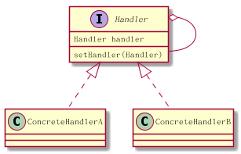

java 设计模式
Table of Contents
1 UML 图示及plantuml 语法
1.1 泛化（Generalization） is-a
就是我们熟悉的继承。

plantuml 语法如下。
Animal <|-- Tiger
1.2 实现（Realization）
就是接口的实现

interface IBrush IBrush <|.. PenBrush
1.3 聚合（Aggregation）

Class Car{
}
Class Engine{
}
Class 轮胎{
}
Car "1" o-- "1" Engine
Car "1" o-- "4" 轮胎
"has-a" 关系，依赖关系较弱，一个车 ，少一个轮子，也叫车。
1.4 组合(Composition)

"contains-a"关系， 依赖关系较强，所以是实心的。
公司 *-- 财务部 公司 *-- 研发部
2 Structural Patterns
2.1 适配器模式 Adapter
将一个类的接口转换成客户希望的另外一个接口。Adapter 模式使得原本由于接口不兼容而不能一起工作的那些类可以一起工作。 其实现方式主要有两种：
- 类的适配器模式（采用继承实现）
- 对象适配器（采用对象组合方式实现）
组合方式的例子
public class XpayToPayDAdapter implements PayD{ private final Xpay xpay; public XpayToPayDAdapter(Xpay xpay){ }
2.2 Facade模式[fəˈsɑːd]
Facade模式可以用于，封闭复杂子系统， 或者分层系统，
package com.javacodegeeks.patterns.facadepattern; public class ScheduleServerFacade { private final ScheduleServer scheduleServer; public ScheduleServerFacade(ScheduleServer scheduleServer){ this.scheduleServer = scheduleServer; } public void startServer(){ scheduleServer.startBooting(); scheduleServer.readSystemConfigFile(); scheduleServer.init(); scheduleServer.initializeContext(); scheduleServer.initializeListeners(); scheduleServer.createSystemObjects(); } public void stopServer(){ scheduleServer.releaseProcesses(); scheduleServer.destory(); scheduleServer.destroySystemObjects(); scheduleServer.destoryListeners(); scheduleServer.destoryContext(); scheduleServer.shutdown(); } }
此例对外屏蔽scheduleServer的启动停止过程的细节。
2.3 Composite Patten构成模式
觉见的应用就是树，有四个参与者， Client 树的使用者， Component元件（叶和非叶的公共接口），leaf叶子节点， Composite非叶节点 比如，HTML解析这种场景就适合使用构成模式。

2.4 Bridge Pattern
桥接模式，实现上是桥接了两条线， 一条是以Abstract Class为基础的类继承序列，另一条是以Interface 为基础的实现序列。 通过在AbsttractClass中的一个成员变量，使用构成（聚合）的方法，桥接接口序列.

左边一条线：
package com.qianyan.bridge; public abstract class Car { private Engine engine; public Car(Engine engine) { this.engine = engine; } public Engine getEngine() { return engine; } public void setEngine(Engine engine) { this.engine = engine; } public abstract void installEngine(); } public class Bus extends Car { public Bus(Engine engine) { super(engine); } @Override public void installEngine() { System.out.print("Bus:"); this.getEngine().installEngine(); } public class Jeep extends Car { public Jeep(Engine engine) { super(engine); } @Override public void installEngine() { System.out.print("Jeep:"); this.getEngine().installEngine(); }
右边一条线
public interface Engine { /** * 安装发动引擎 */ public void installEngine(); } public class Engine2000 implements Engine { @Override public void installEngine() { System.out.println("安装2000CC发动引擎"); } } public class Engine2200 implements Engine { @Override public void installEngine() { System.out.println("安装2200CC发动引擎"); } }
使用方法
public class MainClass { public static void main(String[] args) { Engine engine2000 = new Engine2000(); Engine engine2200 = new Engine2200(); Car bus = new Bus(engine2000); bus.installEngine(); Car jeep = new Jeep(engine2200); jeep.installEngine(); } }
为了更好的理解 桥接模式的用途，我们来想象一下如果不用桥接，这要怎么实现.

2.5 Proxy Pattern
有很多变种 ，Remote Proxy, Virtual Proxy,and Protection Proxy
为什么需要代理，因为被代理的对象
- may be remote
- expensive to create
- in need of being secured.
3 Creational Patterns
3.1 单例模式
懒汉式
class Singleton { private static Singleton instance = new Singleton(); private Singleton() { // } public static Singleton getInstance() { return instance; } }
懒汉式的缺点是，类加载时就要实例化了。 而不是第一次调用时实例化。
改进方法如下
public class Singleton { // Private constructor prevents instantiation from other classes private Singleton(){} /** * SingletonHolder is loaded on the first execution of Singleton.getInstance() * or the first access to SingletonHolder.INSTANCE, not before. */ private final static class SingletonHolder { private final static Singleton instance = new Singleton(); } public static Singleton getInstance() { return SingletonHolder.instance; } }
4 Behavioral Patterns
4.1 Observer Pattern观察者模式
观察模式 即发布订阅模式， 从第一理解性上，发布订阅更好更好理解。 发布者就是被观察者， 订阅者就是观察者。
订阅者，订阅观察者以后，就被加入到发布者管理的订阅者数组里， 当发布者想发布事件时，就循环调用数组中订阅者接口。
java.util.Observable 提供了被观察者的实现 java.util.Observer提供了观察者接口。注意这个名字是observ er 不是ob server 观察者，有update(Observable o, Object arg)方法，当被观察者调用 setChanged(); notifyObservers(homework);
notifyObservers函数就是循环调用，observer的update方法。
observable.addObserver observable.deleteObserver 管理观察者数组
被观察者observable又被称为Subjet目标。
4.2 Mediator Design Pattern 中介者模式
比如 一个洗衣机Machine, 需要控制马达Motor的开启，依据用户选的衣服类型设置马达转速，根据衣服类型选择使用洗涤剂或者柔顺剂，依据温度传感器的温度，调整使用热水还是凉水。 这样， 机器 马达 配置内存 洗涤剂或者柔顺 温度传感器 水阀 ， 这些对象之间就要有关联和控制， 如果没有中介者， 程序会相当复杂，偶合度高，部件重用性小。
中介者，就是这些部件的中介， 每一个部件，只需要知道使用哪个中介，和中介都 有哪些操作可以使用， 中介自己去实现调用哪个部件。
4.3 Chain of Responsibility Pattern责任链模式
一组对象按一定顺序被链接在一起， 一个责任(请求)，如果在当前对象中可以被处理，则处理完成后返回结果，如果处理不了，递交给后一个对象来处理。

关键点是 Handler 里有一个指向下一个Handler的指针